Team Eggplant
Intel Cornell Cup 2016
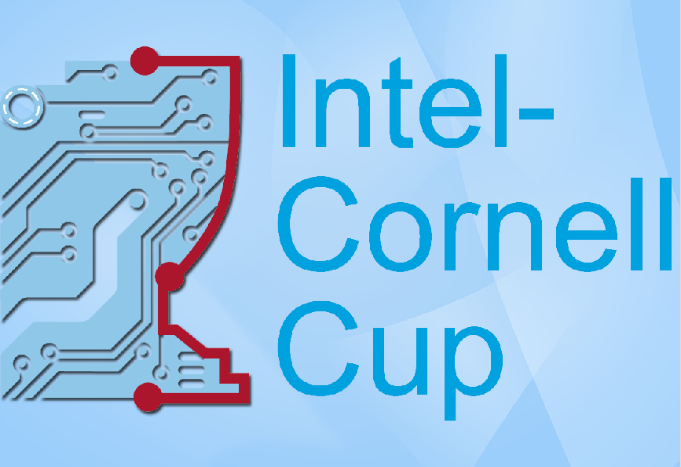Thanks
- Professor Braunstein
- Intel
- Cornell
- Judges
Agenda
- Introduction and Pitch
- Concepts/Motivations
- Metrics, Solution Selection
- Accomplishments/Progress
- Execution Overview
- Moving Forward
The Team
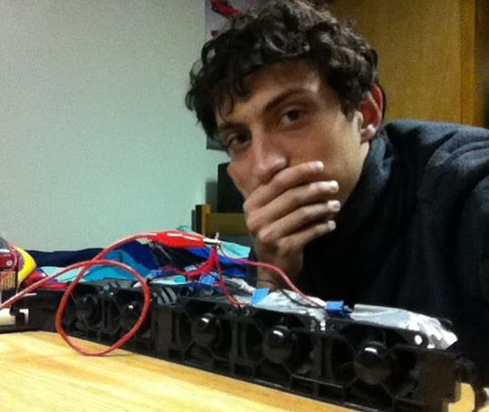
John Drogo
Karl Nasrallah
Mark Blanco
Ronald East
Severin Ibarluzea
Our Advisor
Jeffrey Braunstein
The Pitch
- "Dynamic" displays systems are costly to purchase and install
- Having dynamic display systems everywhere allows for crowd control via distributed sensor systems.
- Better directions can save lives and get you places quicker
- Can also replace disposable posters, recurring announcement boards etc.
Existing Display Technologies Not Cutting It
- Costly to purchase (especially as size increases)
- Complex and costly mounting and cable routing
- Wasteful when throwing out
- Not feasible as a safety device
Importance
- Flow control can be everywhere
- Many places capable of helpful hints or direction don't have affordable ways to mount a dynamic display system
- Flow control increases efficiency and has the potential to save lives
Problem Statement
Dynamic display systems are currently not fit for safety and traffic flow direction
Soft Objectives
- Image and message projection for a lower cost than TVs/Monitors
- Capable of indicating readable directions for a person to follow
- Portable and easily mounted
Key Functionality
(inexpensive) display of simple messages/images via Wifi
Evaluation Metrics
| Metric | Weight |
|---|---|
| Low Cost | 3 |
| Portability | 1 |
| Low Energy | 1 |
| Projection Quality | 2 |
| Ease Of Implementation | 3 |
Brainstorming
Conceptual Test (1)
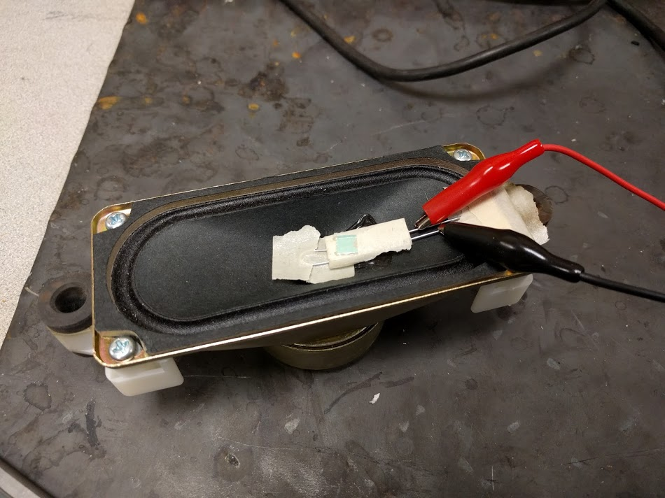Conceptual Test (2)
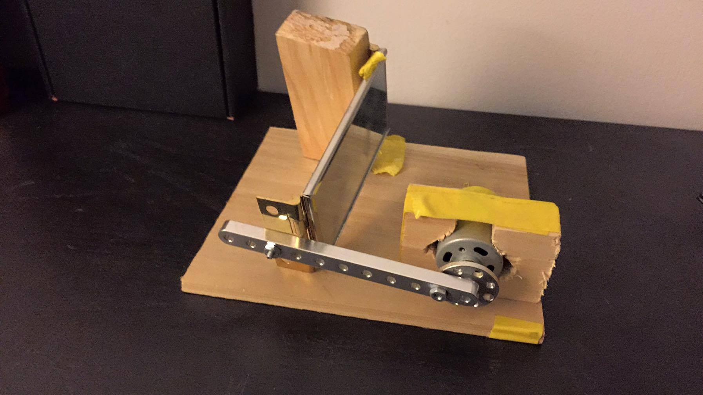Investigation of Mechanical Solutions
Dual Rotating Mirror
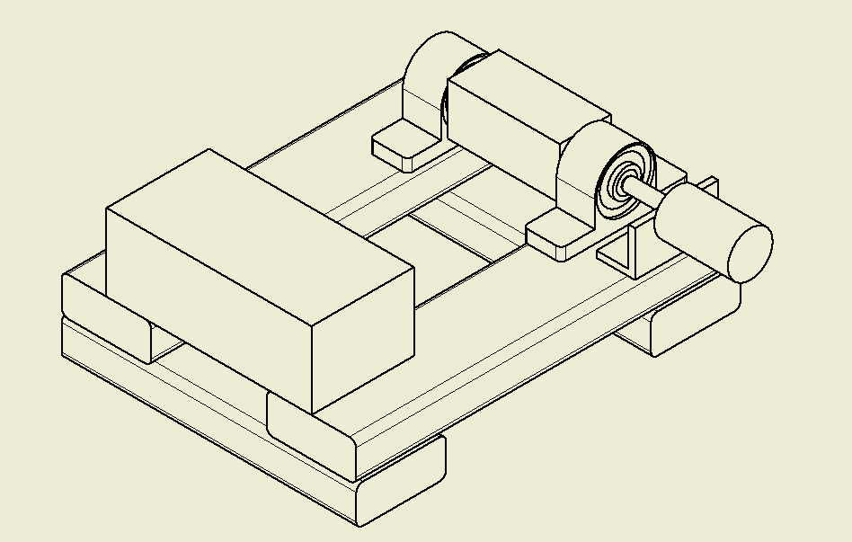Dual Rotating Mirror (cont)
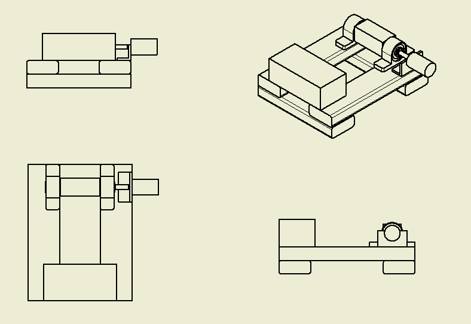Dual Fast Servo
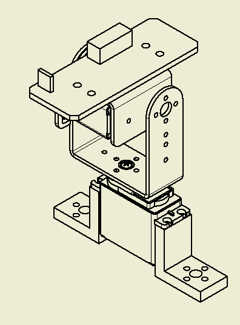Dual Fast Servo (cont)
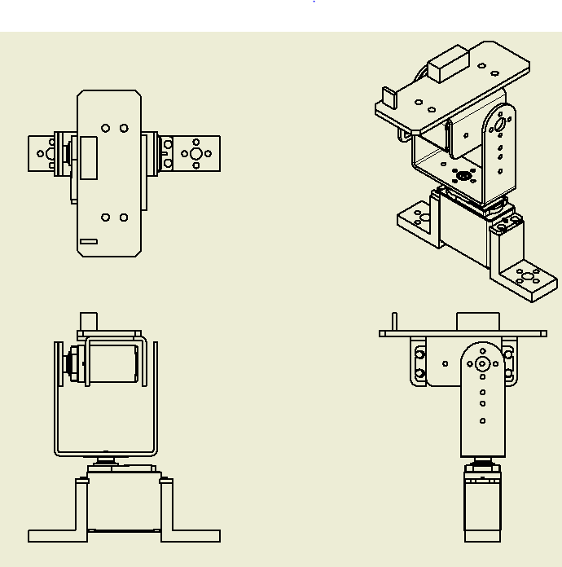2-Axis Oscillation

2-Axis Oscillation (cont)
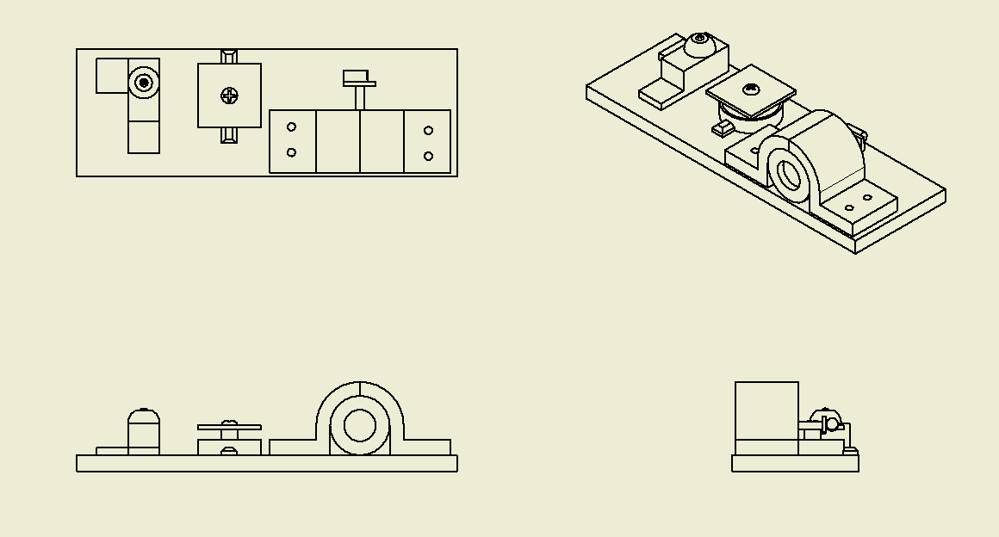Decision Matrix
| Concept | Weighted Score |
|---|---|
| Dual Rotating Mirror | 7.9 |
| Dual Fast Servo | 6.9 |
| 2-Axis Oscillation | 6.5 |
Investigation of Microcontroller Solutions
ATmega328, ESP8266/Wifi Shield
- Familiar technology
- Low Cost
- Slow wifi communication
- Extremely resolution limited
PSOC 5LP, Redpine Signals WiFi
- Low Power Device
- Low Cost
- Custom fabrication required
- Intensive firmware development
- Resolution Limited
Intel Atom, Intel Galileo
- VGA Resolution
- Realtime Image manipulation via FPGA
- Capable wifi via mPCIe
- Expensive (for development)
Chosen Solution
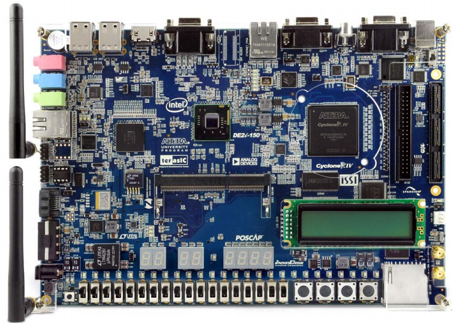Subsystem/Interface Overview
- Mechanical System
- Laser Circuit
- Software/Web API
Mechanical System Control
- Motor control via 5V 16 bit PWM
- individual horizontal and vertical adjustment
Laser Circuitry
- Single wire data line
- Frequency adjustment should correspond with motor speed
Software/Web API
- USB/UART serial communication to microcontroller
- Simple protocol for sending image bits
- Scripts for converting ascii art to binary blob
- Computer vision "dot" position identification
- Web server with POST endpoints
Prototype Progress
Initial Prototype
Initial Protoype (cont)

Initial Prototype Projection Example
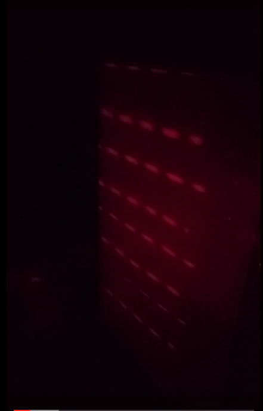Refined Prototype
Refined Prototype (cont)
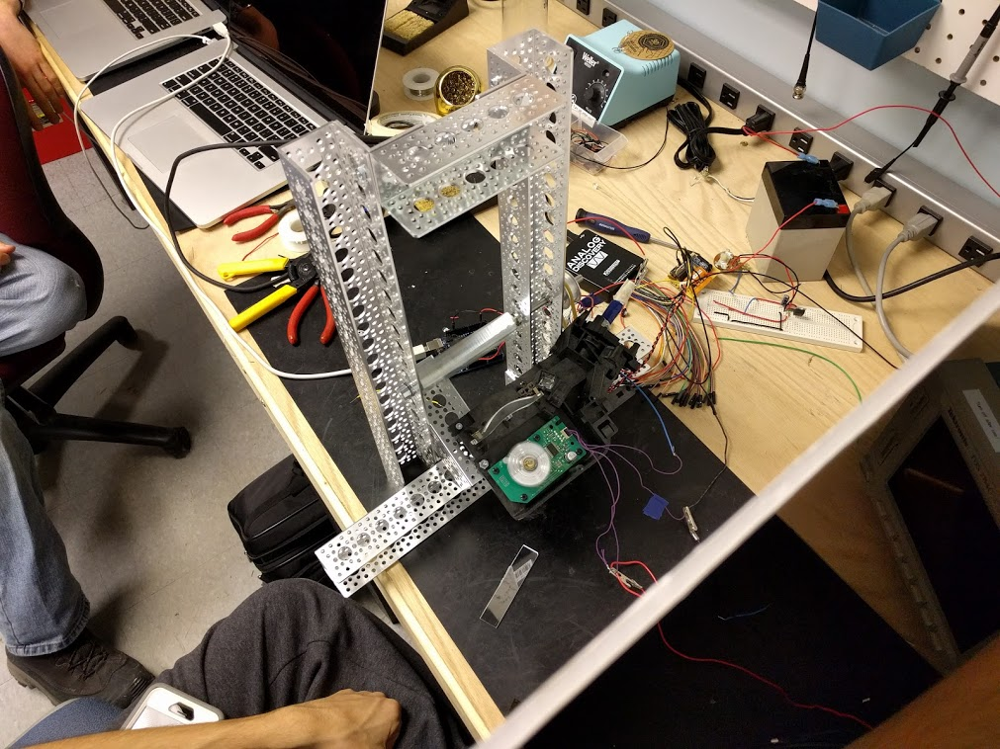Refined Prototype (cont)
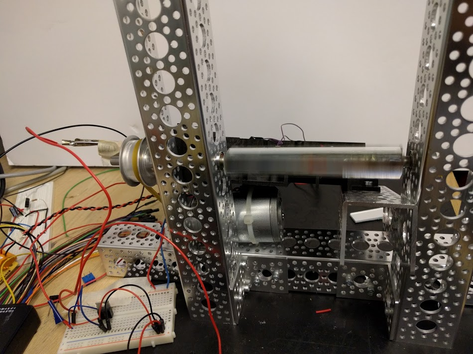Refined Prototype (cont)
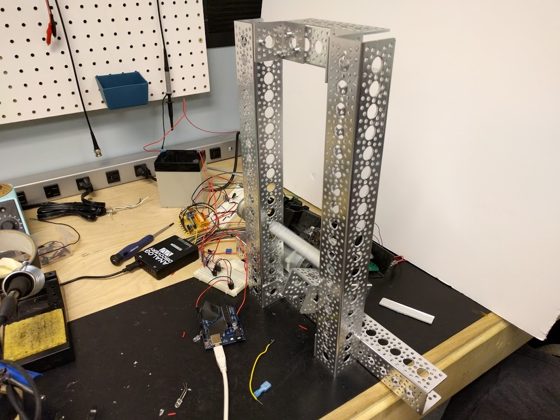Example Projection (cont)
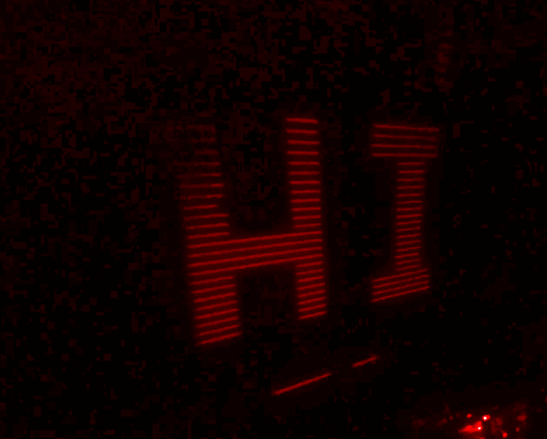Live Projection
Example Projection (cont)
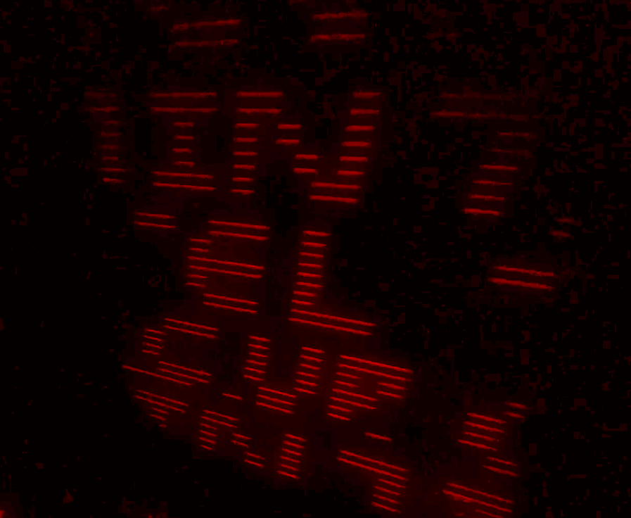Computer Vision Frequency Calibration
Evaluation of Prototype via Performance Metrics
Metric: Cost
- <$50 spent on final prototype
- Bill of materials worth approximately $90
Metric: Portability
- Recalibration necessary
- Relatively Fragile
- Mountable
Metric: Low Energy
- ~0.3A at 24V = 7.2 Watts
- Not ideal for battery-powered applications
Metric: Projection Quality
- Low Resolution (roughly 64x64 should be possible)
- Alignment issues due to ATmega328 limitations
- Display brightness very low
Metric: Ease of Implementation
- Resources on-hand
- Few undocumented/uncommon components
Results Discussion
- Rastering
- Works!
- Reasonable power consumption
- Low visibility
- Low resolution (due to microcontroller)
Execution Summary
- CAD and several system designs
- Functional Raster-based Prototype
- Software for image rastering
- Beginnings of computer vision frequency calibration
Issues / Risks
Iteration and Rapid Development
Budget Justification
Total amount spent = < $100
Most parts donated and salvaged
Moving Forward
Department Support
- Increased budget to explore more prototypes
Integration w/ DE2i-150 (Intel Atom Dev Board)
- Increase resolution of rastered image
- Computer vision frequency alignment on-board
- Video support!
Development of online platform
- Interfaces for video support
- Web-based interface/GUI
Development of vector image prototype
Exploration of Photopolymers
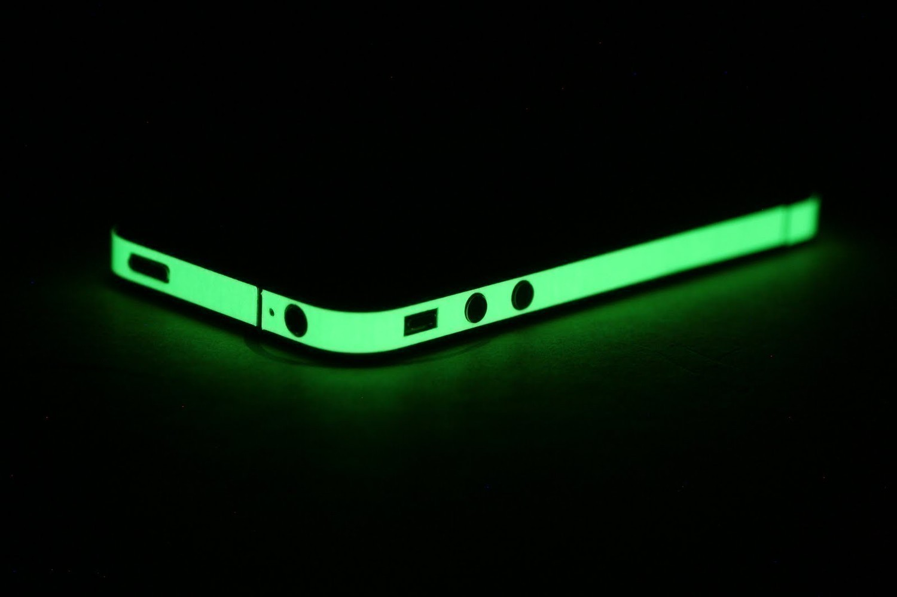source: http://www.glowt-shirt.com/
Development of Safety Features
- Distance detection via integrated camera
- Incorrect distance or "unflat" shape turns off laser
Development of miniature raster image prototype(s)
In Review
- Laser projection systems allow for efficient building evacuation and flow control
- Built laser projection system capable of low-resolution images
- Designed several other laser projection systems
- Future work includes building unique new systems, safety features, photopolymers and Intel Atom integration.
Thanks!
- Professor Braunstein
- Intel
- Cornell
- Judges